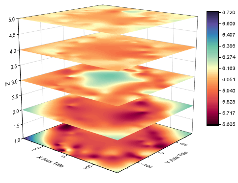

3D積み上げ曲面
3D-Stacked-Surfaces

必要なデータ
- ワークシートからプロットする場合、
- (1)XYZデータとXYZ列を異なるグループに分けるもう1つの参照列が必要です。
- (2)XYZZ...データと曲面を載せるZ軸の位置を決める列ラベル行が必要です。
- 行列からプロットする場合、
- 同じ行列シートに最低3つの行列オブジェクトを準備します。
グラフ作成
ワークシートや行列シートをアクティブにします。
メニューからを選択します。
- ワークシートデータでは、plot_xyz3dstackダイアログが開きます。これは3D積み上げヒートマップと同様です。
- 行列データでは、平面として行列オブジェクトが直接プロットされます。
テンプレート
glStackedSurf.OTPU (Originのプログラムフォルダにインストールされています。)
Notes
- 全ての曲面は平らになっており、Z軸上の座標はZ値ソースのオプションでコントロールされています。
- ワークシートデータが等間隔や疎でない場合、XYZZ...データを3Dカラーマップ曲面として直接プロット（作図＞3D:3Dカラーマップ曲面)し、平面にすることができます。